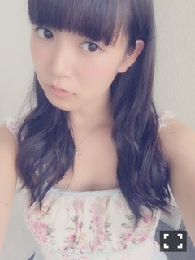
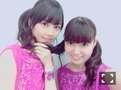
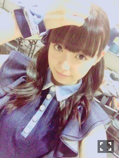

| 2015/08 04 Tue | ひめたん-0o0-その562 |
土日は名古屋で
セブンイレブンライブと握手会でした！
暑い中たくさんの人が
遊びに来てくれました
本当にありがとう(´,,•ω•,,｀)
■全国握手会

19レーン、愛未ちゃんとペアでした！
ペアPV、チームご、ユニット曲
前回のNOGIROOMなどなど
何かとご一緒させてもらっている2人なので
初めましての方とも
いろんなお話ができた気がします(´｡•ω•｡`)
途中からは舞台挨拶で
生駒ちゃんが早退したため
らりんも加わって3人レーンになりました！
乃木團！
ということであみあみ族のみなさん
らりん一家のみなさん
ひめきゅんのみんなありがとう♡
■個別握手会
1部 おろし巻き

気付いたかな？
真夏とのペアグラビアで着たワンピースが
可愛かったので買っちゃった(´,,•ω•,,｀)
2部・3部では浴衣を着ました！
時間なくて写真撮れなかったの。
2部はおろしてお花、
3部は編み込みサイドポニー。
紺色の浴衣。
京都とは違うやつです☆
ライブの感想とかツアーもうすぐだねとか
たくさんお話できました(^o^)
ツアーといえば、今週末には
名古屋にいくから
またすぐ会えるんだね～♪
楽しい2日間でした
ありがとうございました！
■らじらー！サンデー
浴衣回！！
オリラジのお二人も浴衣で
スタジオにかき氷機とか風鈴とかあって
夏祭り気分でお送りしました！
握手会のと帯かえたよ～

ゲストにFISHBOYさんをお迎えしての
兄弟トーク楽しかったですねo(^▽^)o
RADIOFISHとしてのパフォーマンスは
もちろん拝見したことがあったのですが
ラジオでの共演となるとまた新鮮で
お二人の仲の良さが伝わってきました～＊
また遊びに来てほしいなあo(^▽^)o
福島から駆けつけてくださったということで
ありがとうございました！
兄弟姉妹トークまたやりたい！
今回、「日芽香の部屋」というコーナーで
メインMCを任せていただけて
ほんとにほんとにいい経験になりました！
改めてオリラジさんの凄さと
自分の力の無さを感じた！
まだまだらじらーで
鍛えていただかなければ(｀・ω・´)
生駒ちゃん、いくちゃん、ちーちゃん、
さゆ、愛未、まいちゅん本人から
応援メッセージ届きました！ありがとう！
みなさんもメールたくさん
ありがとうございました♡♡
カープ女子のコーナーは最終回てことで
広島公演に向けての公約をしましたが
リスナーさん限定ということで
あえてここには書きません(´,,•ω•,,｀)
凱旋楽しみ！
来週再来週はお休み、番組は22日再開です。
乃木坂回ではなんと、神宮球場から
藤森さんが中継してくださる予定です！
30日行くよって人も行かない人も
ライブのあと20時かららじらー聞いてね♡
■真夏の全国ツアー2015
いよいよ始まります！

今年はいくちゃんとも一緒に
回れるんだな～って
リハしながらしみじみ思いました♡
スタートは5日6日宮城公演！
ゼビオアリーナ仙台は
去年もおじゃましましたね
また今年も会いに行けるなんて。
忘れもしない、
まいまいがアーメンしたら
まるでお祈りが届いたかのように
天窓が一斉に開いた幻のゼビオアリーナ仙台。
牛タンカーも興奮したな～
今年もステキな思い出作りましょう
よろしくお願いします(´,,•ω•,,｀)
コールは＼ひめたん！／
サイリウムは
ぴんく
×
ぴんく
！
ヘアはなるべく
公演前にめーるするから
ひめのこと見つけてね～？
みんなでステージに立つのはbirthday以来。
楽しみ！しかも去年よりも
たくさん公演数できるなんて幸せ( ´•̥ω•̥` )
あとは、雨だけが心配ですね
去年のツアーは雨の思い出があるので
今年は晴れますように。
■雑誌
7/31 UPDATE girls
発売中です！
ラジオのことを中心に
熱く語っているので
リスナーさんは是非見てほしいな～＊
スタジオの写真あり！
オリラジさん、美彩先輩のコメントあり！
グループとしてでなく個人としての私や
メンバーを知っていただけると思います
よろしくお願いします(´｡･v･｡｀)
8/6 TopYell
私の新連載が始まります！
タイトルは
【パーフェクトアイドルになるための
【パーフェクトアイドルになるための
『乃木坂46・中元日芽香の挑戦！』】
名前の通りなんですが
毎回いろんなことに挑戦するんだって～♪
アイドルがやらなそうなこと(｀・ω・´)
初回はラートというスポーツをやりました
みなさんラートってご存知ですか？？
■乃木坂ゴルフ倶楽部
#2配信されました！
握手会でもゴルフ上手になったよねって
たくさん言われたんだ～
ゲストは引き続きTIMさんです
是非ご覧ください♪

ツアーの感想とかも教えてね♡
楽しみ(´｡•ω•｡`)今夜寝れるかな～
(＊´・ω・＊)
コメント(802)
2015/08/04 23:46